Status Bar Skins
These options allow you to choose between various skins used on all the status bars to display things such as Health, Endurance, Power, PVE XP, etc. Each individual Maze, Bubble, Square, etc. represents 10% or whatever it is linked to just as the bubbles do in the original UI.
Bubbles
The Bubble skins are made up of circular bubbles that fill or empty as the status changes. These are similar to the one used in the original UI. You can select to have the pattern fill in from left to right as in the original UI or have the bubbles fill up one at a time from Bottom to Top.
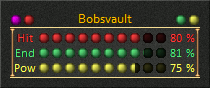
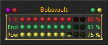
Icz Bars
The Icz Bar skins are made up of a bar that fills or empty as the status changes. The pattern fills in from left to right as in the original UI.
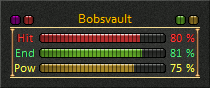
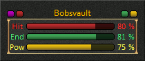
Mazes
The Maze square skin is made up of square mazes that fill in or empty as the status changes. The Maze circular skin is made up of circular mazes that fill in or empty as the status changes.
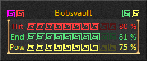

Ochi Bars
The Ochi Bar skins are made up of a solid bar that fills or empty as the status changes. The pattern fills in from left to right as in the original UI.
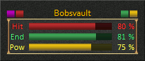
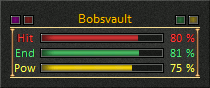
Solid Bars
The Solid Bar skins are made up of a solid bar that fills or empty as the status changes. You can select to have the pattern fill in from left to right as in the original UI or have the bar fill up in sections one at a time from Bottom to Top.
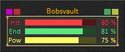
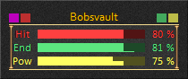
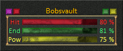
Split Bars
The Split Bar skins are made up of a split bar that fills or empty as the status changes. The pattern fills in from left to right as in the original UI.
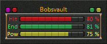
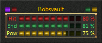
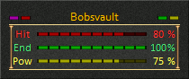
Squares
The Square skins are made up of squares that fill in or empty as the status changes. You can select to have the pattern fill in from left to right as in the original UI or have the squares fill up one at a time from Bottom to Top.
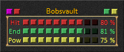
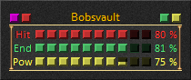